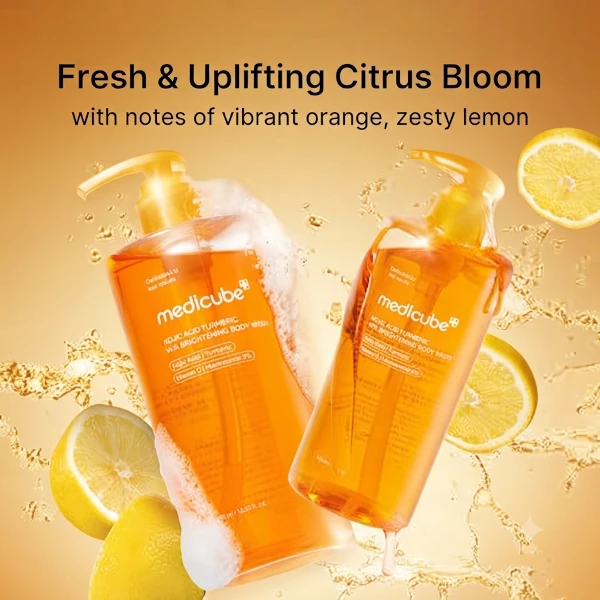
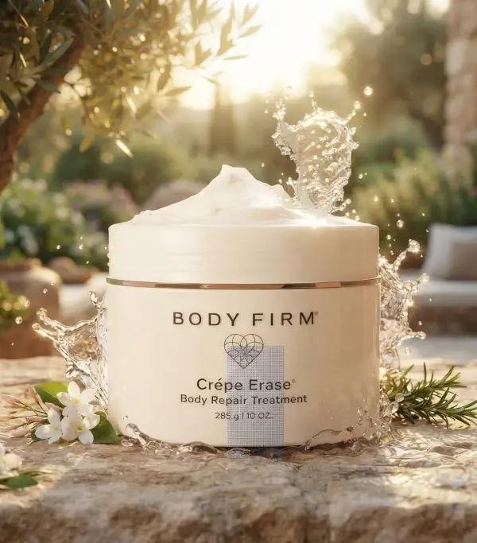
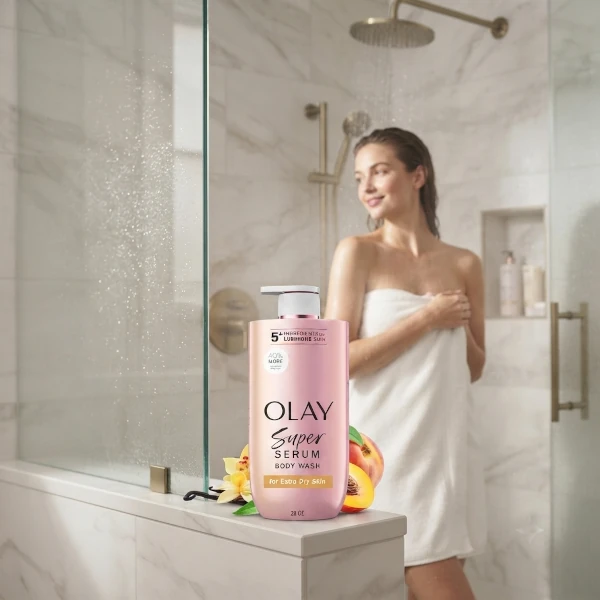
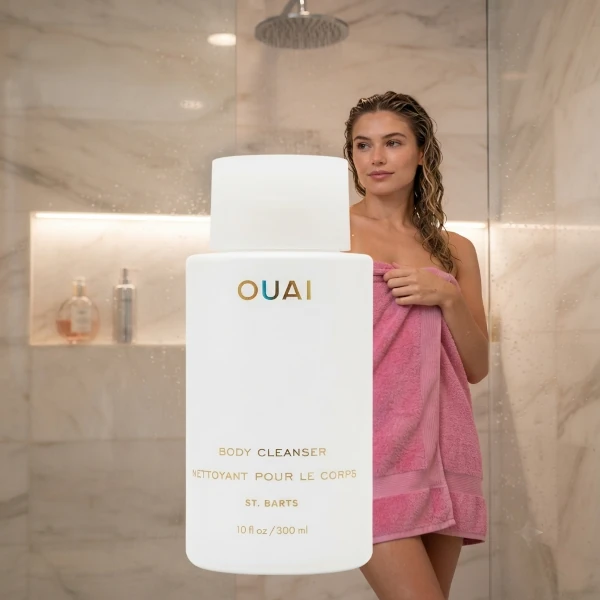
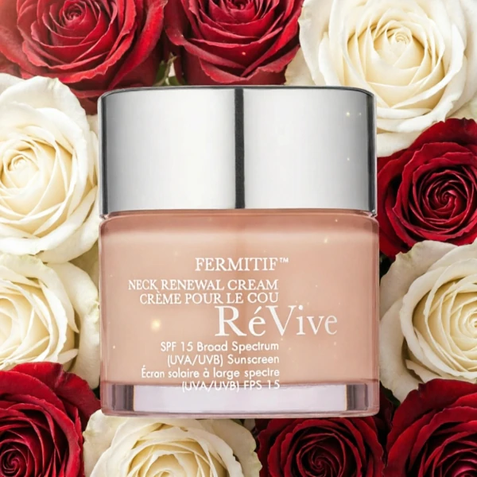
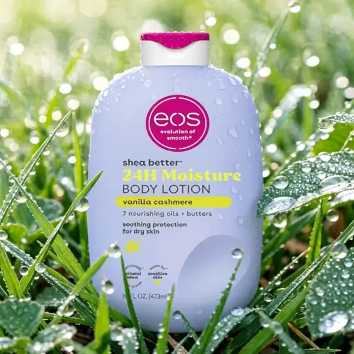

Aquí encontrarás nuestra selección experta de productos para el cuidado de tu cuerpo que transformara tu experiencia.

Gel de ducha corporal
¡Dale a tu piel un resplandor espectacular! 🍊✨ Como experta, mi aliado secreto para un cuerpo radiante es el Gel de Ducha Iluminador de Medicube.
¿Tienes tono desigual o zonas opacas? Este gel es un sueño: combina ácido kójico, cúrcuma, niacinamida y vitamina C para aclarar y renovar tu piel en cada ducha. Además, sus AHA/BHA exfolian suavemente, dejando una textura increíblemente tersa y profundamente hidratada.
Es una rutina de cuidado profesional, práctica y efectiva. ¡Siente la frescura cítrica y luce una piel uniforme y luminosa todos los días!
Comprar en la tienda

Body Firm
¿Notas que tu piel ha perdido firmeza? Como experta, siempre busco soluciones que realmente reparen. Hoy les presento mi aliado para un cuerpo tonificado: BODY FIRM.
Este tratamiento no es una simple crema; es una fórmula reparadora diseñada para estimular la producción natural de colágeno y elastina. Es ideal si buscas devolverle a tu piel esa elasticidad perdida, suavizando arrugas y logrando un aspecto visiblemente más joven y terso. Su textura es deliciosa y se absorbe de inmediato, brindando un cuidado profundo que transforma tu silueta con constancia.
Comprar en la tienda

Gel de ducha corporal Olay
¿Piel extraseca? En Kharla Cosmetics te presento el Olay Super Serum.
Su poderosa fórmula con péptido de colágeno, vitamina C y manteca de karité brinda 24h de hidratación intensa. Este complejo de más de 5 ingredientes premium transforma tu piel en cada ducha, logrando un tono uniforme, firme y radiante. ¡Un lujo esencial para lucir una piel luminosa y profundamente nutrida!
Comprar en la tienda

Gel de ducha espumoso OUAI St. Barts
¡Sumérgete en el paraíso con mi nuevo secreto de belleza!
En Kharla Cosmetics te presento el Gel de ducha espumoso OUAI St. Barts. Su fórmula de lujo con aceite de jojoba y aceite de rosa mosqueta hidrata, nutre y suaviza tu piel, dejándola equilibrada y radiante. Además, es libre de parabenos y sulfatos. ¡Es el toque de lujo que tu rutina diaria necesita! 🌺✨
Comprar en la tienda

Crema reafirmante para el cuello RéVive
¡Luce un cuello joven con RéVive Fermitif SPF 15! Esta crema reafirmante es tu aliada ideal para alisar y tensar la piel. Gracias a su potente fórmula con péptido biorrenovador y bioreafirmante, hidrata intensamente y restaura la firmeza perdida. Cuida tu piel con la calidad que solo Kharla Cosmetics te ofrece. ¡Eleva tu rutina de belleza y luce un cuello visiblemente terso y renovado hoy mismo!
Comprar en la tienda

Loción corporal eos Shea Better
¡En Kharla Cosmetics amamos la loción eos Shea Better Vainilla y Cachemira! Su precio es increíble y sus beneficios insuperables: 24 horas de hidratación profunda con manteca de karité natural. Es vegana, ligera, no grasa y deja un aroma delicioso. ¡Consiente tu piel con calidad premium sin gastar de más! El cuidado corporal que tu rutina necesita está aquí, ¡ven por tu loción de 473 ml hoy!
Comprar en la tienda